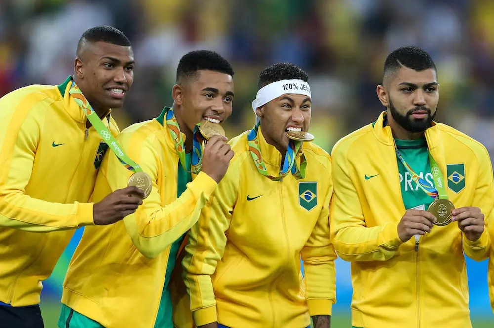
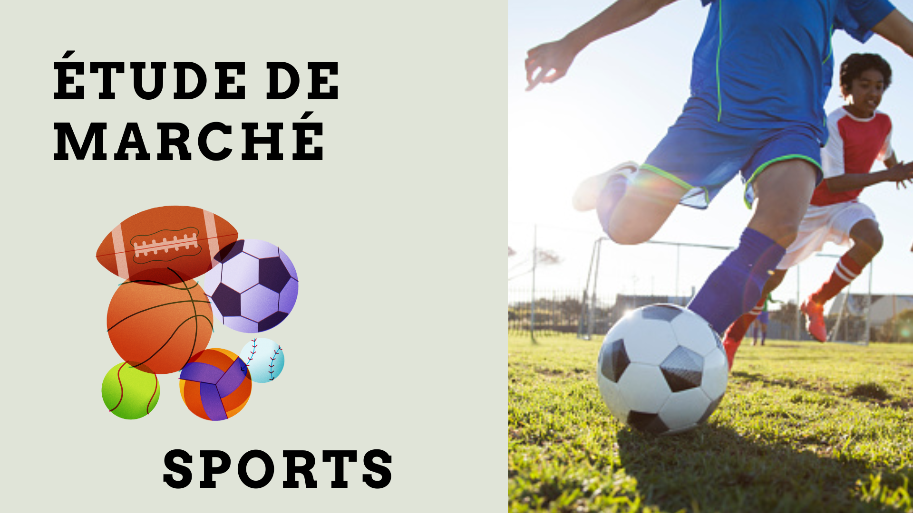

L'histoire
Le football est un sport collectif qui existe depuis maintenant 1848.
Connu dans le monde entier, le football attire des milliards de spectateurs. Ainsi, il est parmi les sports qui attirent le plus de spectateurs au monde.
Les règles
Les règles du football permettent de maintenir une bonne continuité du jeu. Sans ces règles, le football ne serait plus le même. C'est pour cela qu'un arbitre central est présent dans chaque match afin de juger si les joueurs respectent chaque règle du football.

Les Jeux Olympiques
Le football a été ajouté aux Jeux Olympiques dans les années 1900. Tous les 4 ans depuis, le football fait son apparition dans les Jeux Olympiques. Ainsi, les Jeux Olympiques restent un événement important dans le calendrier footballistique mondial.

Statistiques
Les Jeux Olympiques 2024 ont permis de découvrir certaines performances exceptionnelles. Ces joueurs ont parfois permis d’amener leurs équipes vers le haut, en revanche, d'autres n'ont pas réussi malgré leurs performances.

Etude de marché du sport
Aujourd’hui, le marché du sport est en hausse et fait partie des marchés les plus rentables.